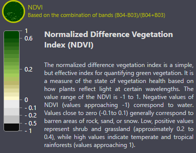

Galleria e Mappa dell'evoluzione naturale post-incidente
Questa immagine mostra la legenda usata per interpretare i colori delle mappe e delle immagini satellitari relative alla vegetazione e alla zona di esclusione.
Immagini in True Color 4 giorni prima dell'incidente
Immagine con filtro NDVI 4 giorni prima dell'incidente
Immagine della situazione di chernobyl 3 giorni dopo l'incidente
Immagine della situazione della vegetazione 3 giorni dopo l'incidente
1986: La vegetazione subì una devastazione immediata a causa delle radiazioni. Molte piante, in particolare gli alberi, morirono rapidamente. La flora locale non riuscì a resistere all'immediata contaminazione.
A Sei mesi dopo l'incidente di Chernobyl, la vegetazione nelle vicinanze subiva ancora gravi danni a causa delle radiazioni. Le piante, comprese le foreste, mostrarono segni di stress, con foglie secche e morte. La biodiversità vegetale diminuì drasticamente, e molte piante non riuscirono a sopravvivere.
Nel 1987, l'ambiente continuò a soffrire. Le piante sopravvissute nel 1986, infatti, cominciarono a morire definitivamente a causa del continuo stress radiologico, riducendo la vegetazione visibile. La crescita di specie più resistenti, come muschi e felci, iniziò, ma queste piante erano meno visibili rispetto agli alberi, dando l'impressione di una minore presenza di vegetazione.
Nel 1987, la flora di Chernobyl mostrava gravi danni a causa del disastro nucleare. Nella Foresta Rossa, gli alberi erano morti e rossastri per le radiazioni intense. La vegetazione nelle aree circostanti presentava crescita rallentata, mutazioni e ridotta biodiversità. Solo alcune specie erbacee e resistenti mostravano segni di sopravvivenza.
Un anno dopo l'incidente di Chernobyl, la fauna terrestre nella zona di esclusione era gravemente colpita dalla contaminazione radioattiva. Mammiferi come cervi, alci e cinghiali mostravano deformazioni fisiche e una ridotta capacità riproduttiva. I carnivori, come volpi e lupi, subivano un aumento della mortalità. Anche gli uccelli presentavano anomalie. Gli animali, sebbene danneggiati, cercavano di adattarsi alle nuove condizioni, ma la biodiversità era fortemente ridotta e la salute complessiva della fauna compromessa.
La vegetazione è ancora devastata dal continuo stress radiologico
La fauna circostante è ancora segnata dallo stress radioattivo aumentando la mortalita
Le radiazioni continuano a provocare un stress sia per la fauna che per la flora portando a una crsi ecologica
Nel 1991 la vegetazione a Chernobyl mostrava segni di rigenerazione: la Foresta Rossa restava danneggiata, mentre aree più distanti evidenziavano recupero con piante pionieristiche e giovani alberi. La biodiversità era ancora ridotta, ma alcune specie resistenti stavano colonizzando l’area, segnando un lento adattamento all’ambiente radioattivo.
Nel 1993, la fauna acquatica del bacino di raffreddamento di Chernobyl era gravemente compromessa dalla contaminazione radioattiva. Molti pesci e altri organismi mostravano deformazioni, disturbi riproduttivi e anomalie fisiche. Nonostante la bassa biodiversità, alcune specie riuscivano ad adattarsi, ma gli effetti della radiazione restavano evidenti.
Nel 2000, il bacino di raffreddamento di Chernobyl era ancora contaminato da isotopi radioattivi, con segni di recupero ecologico. La vegetazione cresceva abbondante, ma la fauna acquatica era colpita da deformazioni. L'area, ormai inutilizzata per il raffreddamento, fungeva da barriera contro la diffusione della contaminazione.
Nel 2000 la vegetazione a Chernobyl mostrava una notevole ripresa: foreste in espansione, specie adattate alla radioattività e aumento della biodiversità. La Foresta Rossa era ancora segnata ma parzialmente ricoperta da piante pioniere. L’assenza dell’uomo aveva favorito la rigenerazione naturale e nuovi equilibri ecologici stavano emergendo.
Nel 2013, il bacino di raffreddamento di Chernobyl era in fase di disattivazione. Le pompe che lo alimentavano furono spente, avviando l’abbassamento del livello dell’acqua. La contaminazione da radionuclidi, come Cesio-137 e Stronzio-90, era principalmente confinata nei sedimenti. Studi ambientali indicavano un calo della radioattività nelle acque. C’erano preoccupazioni per la possibile dispersione di contaminanti, ma con monitoraggi e misure adeguate, i rischi risultavano gestibili. Il bacino era destinato a prosciugarsi naturalmente.
Nel 2013 la vegetazione a Chernobyl era fitta e in espansione. Alberi maturi coprivano strutture umane, la biodiversità cresceva e molte piante mostravano adattamenti sorprendenti. La natura stava trasformando l’area contaminata in una riserva selvaggia, con un equilibrio ecologico influenzato dall’assenza dell’uomo e dalla resilienza biologica.
Nel 2015, Chernobyl era in fase di transizione: si completavano i lavori per il Nuovo Confinamento Sicuro del reattore 4, fondamentale per contenere la radioattività. L’ecosistema della zona di esclusione mostrava un’insolita rinascita, con il ritorno di numerosi animali selvatici. Tuttavia, persistevano rischi ambientali, soprattutto legati agli incendi. L’area era sorvegliata e studiata da scienziati, e attirava un crescente numero di turisti curiosi di vedere l’evoluzione post-disastro.
Nel 2017, il bacino di raffreddamento della centrale nucleare di Chernobyl era in fase avanzata di disattivazione. Dopo l'interruzione del pompaggio nel 2014, il livello dell'acqua si era abbassato, esponendo i sedimenti contaminati. Studi ambientali indicavano che la radioattività nelle acque era in diminuzione, grazie alla deposizione dei contaminanti nei sedimenti. Tuttavia, c'erano preoccupazioni per la possibile risospensione dei radionuclidi e la loro migrazione nelle acque sotterranee. Con monitoraggi e misure adeguate, i rischi risultavano gestibili.
Il bacino di raffreddamento di Chernobyl, ancora contaminato da isotopi radioattivi, ha visto una riduzione del flusso d’acqua a causa delle dighe, con alcune aree in secca. Nonostante la contaminazione, la vegetazione palustre e acquatica ha prosperato, adattando l’ecosistema locale, che sta recuperando ma con una biodiversità alterata.
Nel 2025, Chernobyl è una foresta viva e complessa. La vegetazione ha invaso gli spazi umani, creando un ecosistema selvaggio e resiliente. Specie adattate crescono rigogliose, stabilizzando il suolo e contribuendo alla biodiversità. È un esempio unico di rinascita naturale in un ambiente post-catastrofe nucleare.